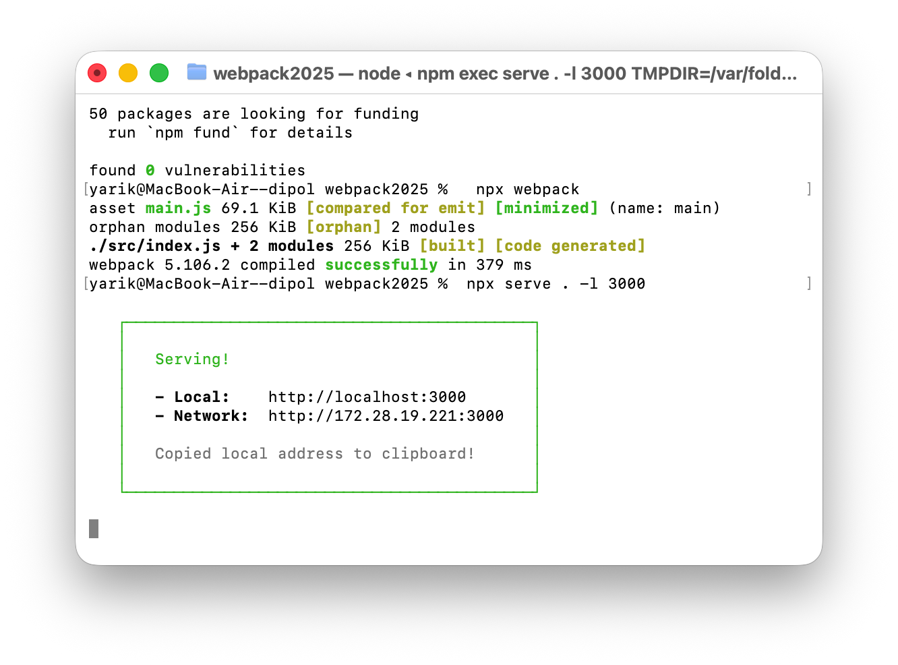
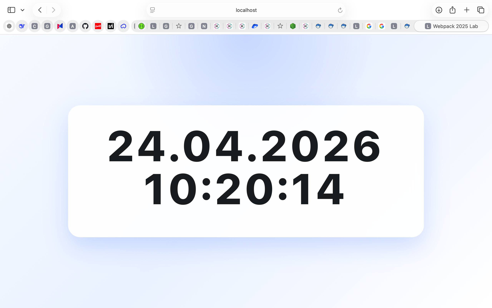
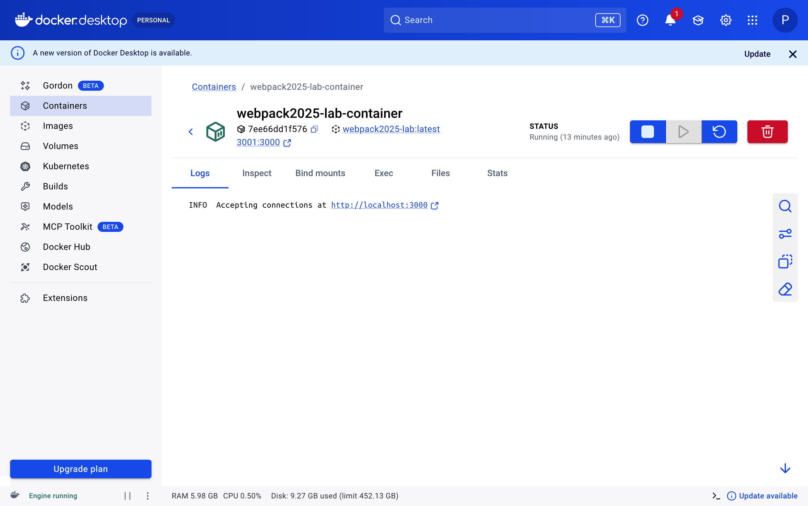
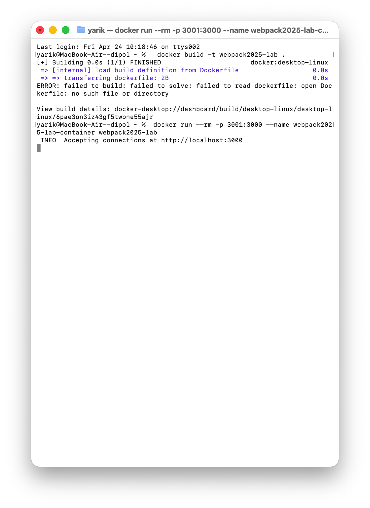
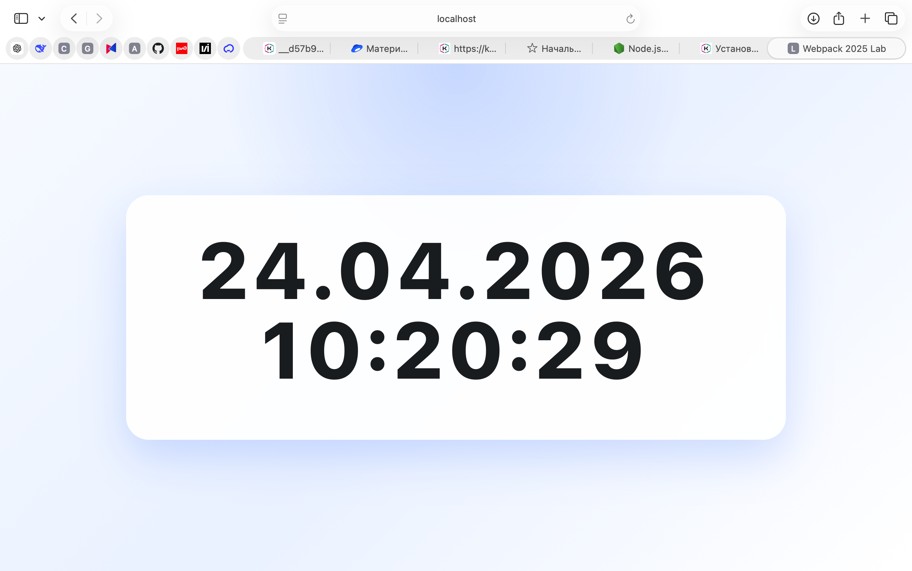

Этап 1 #
Тема #
Создание проекта с использованием webpack, vite, luxon, Bootstrap CDN и Docker.
Что было сделано #
В рамках задания был подготовлен отдельный проект labs/webpack2025 внутри репозитория с такими шагами:
- инициализирован npm-проект;
- установлены
luxon,webpack,webpack-cli,serveиvite; - создан исходный файл
src/index.jsдля сборки черезwebpack; - создан отдельный вход
src/vite.jsи страницаvite.htmlдля варианта наvite; - добавлена веб-страница
index.htmlс подключением Bootstrap по CDN; - реализован крупный вывод даты и времени через
luxon; - создан
Dockerfileна базеnode:24-alpine; - выполнены локальная сборка, запуск проекта и запуск в Docker-контейнере.
Локальная среда:
node v24.15.0npm 11.12.1Docker 29.3.1
Структура проекта #
Основные файлы лабораторной:
labs/webpack2025/src/index.jslabs/webpack2025/src/vite.jslabs/webpack2025/src/renderClock.jslabs/webpack2025/index.htmllabs/webpack2025/vite.htmllabs/webpack2025/webpack.config.jslabs/webpack2025/vite.config.jslabs/webpack2025/Dockerfile
Результат команды npx webpack
#
Команда сборки:
npx webpackРезультат сборки:
asset main.js 69.1 KiB [emitted] [minimized] (name: main)
orphan modules 256 KiB [orphan] 2 modules
./src/index.js + 2 modules 256 KiB [built] [code generated]
webpack 5.106.2 compiled successfully in 404 msСкриншот вывода команды:

Веб-страница с Bootstrap CDN и Luxon #
В index.html подключен Bootstrap через CDN:
<link
href="https://cdn.jsdelivr.net/npm/bootstrap@5.3.7/dist/css/bootstrap.min.css"
rel="stylesheet"
integrity="sha384-LN+7fdVzj6u52u30Kp6M/trliBMCMKTyK833zpbD+pXdCLuTusPj697FH4R/5mcr"
crossorigin="anonymous"
/>Время выводится через luxon крупным шрифтом и обновляется каждую секунду:
import { DateTime } from "luxon";
setInterval(() => {
hh.textContent = DateTime.local()
.setLocale("ru")
.toFormat("dd.LL.y HH:mm:ss");
}, 1000);Скриншот внешнего вида страницы:

Переход на vite
#
Дополнительно был создан вариант проекта на vite.
Команда сборки:
npm run build:viteРезультат:
vite v8.0.10 building client environment for production...
transforming...✓ 7 modules transformed.
rendering chunks...
computing gzip size...
vite-dist/vite.html 1.71 kB | gzip: 0.94 kB
vite-dist/assets/main-Clt1YauP.js 71.34 kB | gzip: 22.50 kB
✓ built in 33msДля этого был добавлен файл vite.config.js, чтобы сборка шла от vite.html в каталог vite-dist.
Содержимое Dockerfile
#
Использован рекомендованный образ node:24-alpine.
FROM node:24-alpine
WORKDIR /app
COPY package*.json ./
RUN npm install
COPY . .
RUN npx webpack
EXPOSE 3000
CMD ["npx", "serve", ".", "-l", "3000"]Запуск приложения через Docker #
Сборка образа:
docker build -t webpack2025-lab .Запуск контейнера:
docker run --rm -p 3001:3000 --name webpack2025-lab-container webpack2025-labПроверка контейнера:
docker ps --filter name=webpack2025-lab-containerРезультат проверки:
CONTAINER ID IMAGE COMMAND CREATED STATUS PORTS NAMES
7dc727533edf webpack2025-lab "docker-entrypoint.s…" About a minute ago Up About a minute 0.0.0.0:3001->3000/tcp, [::]:3001->3000/tcp webpack2025-lab-containerСкриншот запущенного контейнера:

Скриншот запуска контейнера через docker run:

Скриншот страницы, запущенной из Docker-контейнера:

Последовательность действий для запуска #
Если повторять запуск с нуля, достаточно выполнить:
cd labs/webpack2025
npm install
npx webpack
npx serve . -l 3000Для запуска в Docker:
cd labs/webpack2025
docker build -t webpack2025-lab .
docker run --rm -p 3001:3000 --name webpack2025-lab-container webpack2025-labПосле этого приложение будет доступно по адресу:
http://localhost:3000/Для Docker-варианта:
http://localhost:3001/Вывод #
Был создан рабочий проект с базовой сборкой через webpack, отображением времени через luxon, адаптивной страницей на Bootstrap CDN, а также с альтернативной сборкой через vite. Дополнительно проект был упакован в Docker-контейнер на базе node:24-alpine и успешно запущен локально.
Этап 2 #
Тема #
Интеграция Bootstrap 5 в приложение с использованием библиотеки Luxon.
Что было сделано #
На втором этапе был доработан тот же проект labs/webpack2025. Приложение было переработано под отдельный интерфейс на Bootstrap 5 с модальным окном и запуском через Vite.
В работе были выполнены следующие шаги:
- добавлена зависимость
bootstrapвpackage.json; - настроен запуск приложения через команду
npm run dev; - подготовлена Bootstrap-разметка страницы с колонками в соотношении
2-8-2; - в центральной колонке размещена большая красная кнопка
Показать время; - реализовано модальное окно Bootstrap;
- в заголовке модального окна выведена строка
Выполнил: Рыбаков Ярослав; - в теле модального окна через
Luxonвыводится текущая дата и время в форматеdd.MM.yyyy HH:mm:ss; - добавлены два способа закрытия окна: крестик в заголовке и кнопка
Закрытьвнизу справа; - выполнен запуск приложения через
Viteи проверка результата в браузере.
Локальная среда:
node v24.15.0npm 11.12.1
Структура проекта #
Основные файлы второго этапа:
labs/webpack2025/package.jsonlabs/webpack2025/src/index.jslabs/webpack2025/src/vite.jslabs/webpack2025/src/renderClock.jslabs/webpack2025/index.htmllabs/webpack2025/vite.htmllabs/webpack2025/vite.config.js
Создание проекта и установка зависимостей #
После перехода в каталог проекта использовались команды инициализации и установки зависимостей:
npm init -y
npm install luxon bootstrap
npm install -D vite webpack webpack-cli serveНастройка package.json
#
Для запуска приложения в режиме разработки в package.json добавлен npm-скрипт:
"scripts": {
"dev": "vite --host 0.0.0.0 --port 3000 --open /vite.html"
}Это позволяет запускать приложение командой:
npm run devПосле запуска приложение открывается по адресу:
http://localhost:3000/vite.htmlПодключение Luxon
#
Библиотека Luxon используется для получения текущей даты и времени. Формирование значения выполняется в формате:
DateTime.local().setLocale("ru").toFormat("dd.MM.yyyy HH:mm:ss");Пример результата:
25.10.2025 18:06:07Подключение Bootstrap 5 #
Для оформления страницы использованы классы Bootstrap 5, а для открытия модального окна задействован компонент Modal.
На странице реализована сетка с тремя колонками по схеме 2-8-2. Центральная колонка является основной рабочей областью приложения.
В ней размещена большая красная кнопка:
Показать времяКнопка занимает всю ширину центральной колонки благодаря классам Bootstrap:
<button id="showTimeButton" type="button" class="btn btn-danger btn-lg w-100 py-3">
Показать время
</button>Модальное окно #
После нажатия на кнопку открывается модальное окно Bootstrap с затемнением фона.
В заголовке указано имя исполнителя:
Выполнил: Рыбаков ЯрославВ теле модального окна крупным шрифтом выводится текущее время, полученное через Luxon.
Окно можно закрыть двумя способами:
- крестиком в правом верхнем углу;
- кнопкой
Закрытьв правом нижнем углу.
Последовательность выполненных действий #
Последовательность работы над вторым этапом была следующей:
- Создание проекта как npm-приложения.
- Установка зависимостей
Luxon,Bootstrap 5иVite. - Подключение
Luxonдля вывода текущей даты и времени. - Подключение
Bootstrap 5для сетки, кнопки и модального окна. - Написание HTML-разметки страницы с колонками
2-8-2. - Настройка большой красной кнопки
Показать время. - Реализация модального окна с именем исполнителя и временем.
- Запуск приложения через
npm run dev. - Проверка результата в браузере.
Вывод #
В результате на втором этапе было создано клиентское приложение с использованием Vite, Luxon и Bootstrap 5. На странице реализована адаптивная структура с центральной кнопкой и модальным окном, в котором отображаются имя исполнителя и актуальная дата со временем в требуемом формате. Проект запускается через npm run dev и является продолжением первого этапа лабораторной работы.